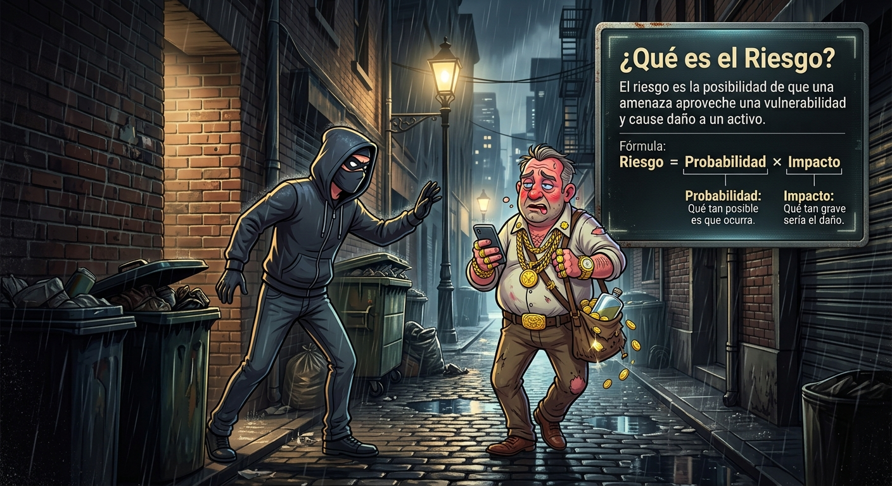

operacionales y de seguridad
Juan Alberto Fajardo Canaza
El riesgo es la posibilidad de que una amenaza aproveche una vulnerabilidad y cause daño a un activo.
Fórmula: Riesgo = Probabilidad × Impacto

Es el proceso de identificar, analizar y controlar los riesgos que pueden afectar a la organización.
Un Sistema de Gestión de Seguridad de la Información (SGSI) es un conjunto de políticas, procesos y controles diseñados para proteger la información de una organización.
fórmula: frecuencia + vulnerabilidad + controles existentes
| factor | valor |
|---|---|
| frecuencia (ataques a universidades) | 4 |
| vulnerabilidad (sin backups, MFA) | 5 |
| controles actuales (cortafuegos básico) | 3 |
| probabilidad final | 4 · muy probable |
caso ransomware en matrículas:
nueva probabilidad: 2 (poco probable, gracias a MFA+conciencia)
nuevo impacto: C=2, I=2, D=2 → total 6
| activo | servidor matrículas |
| amenaza | ransomware |
| vulnerabilidad | sin backups, sin MFA |
| riesgo inherente | 56 (crítico) |
| controles | backup 3-2-1, MFA, IDS |
| riesgo residual | 12 (medio-bajo) |
| decisión | transferir + aceptar |
1. amenaza principal: incendio/explosión
2. vulnerabilidades: extintores vencidos, falta de campana
3. impacto (C+I+D): C=?, I=?, D=?
4. controles propuestos: detectores de humo, inspección
de la identificación a la decisión
ejemplo universidad · curso aplicado